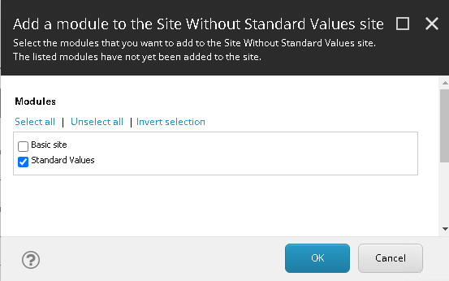
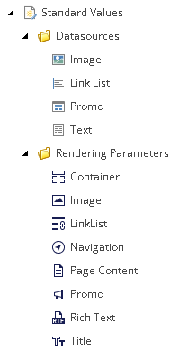
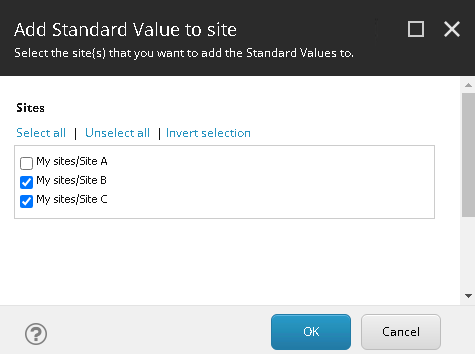
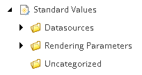

Walkthrough: Defining standard values for your sites
Set up standard values for a site so that when marketers add components to a page, standard values are rendered automatically.
Note
You can use site-specific standard values with different types of templates. This topic describes how standard values work with data source templates and renderings.
Site-specific standard values work differently from the standard values that you define globally under the Sitecore instance. When you define standard values under a site, the standard values are applied only to pages created under that site.
Under the site, you specify which data source templates you want to define standard values for, and then you assign standard values to those data source templates. When a rendering that points to the data source is added to a page, then the standard values are used. This is useful, for example, if you want content authors to see boilerplate text on specific pages under that site. In this example, the content authors can change the text on the page without changing the standard values of the data source template.
If, later, you change a standard value, the change takes effect on all those pages where renderings use the associated data source template.
Note
If the standard value has been changed on a page where a rendering is used, then changing the standard value on the data source template does not overwrite the changed value of the rendering.
You can define standard values under each site, or you can define standard values for multiple sites.
This walkthrough describes how to:
Enable site-specific standard values for an on-prem instance
Enable the Standard Values module
Add standard values under individual sites
Add standard values to multiple sites
Assign values to data source templates
If you are using an on-prem instance, by default, site-specific standard values is disabled.
To enable site-specific standard values for an instance:
Remove the extension
.disabledfrom theSitecore.XA.Foundation.StandardValues.config.disabledfile. The file is in the following directory:\App_Config\Modules\SXA\Foundation.Overrides.
Before you can define standard values for a site, you must enable the Standard Values module during or after creating the site.
To enable standard values while creating a site, on the Modules tab, select the Standard Values check box.
To enable standard values after creating a site:
Right-click the site, click Script, and then click Add Site Module.
In the dialog box, select the Standard Values check box and click OK.
The next step is to add the standard value items to one or more sites.
You can define the standard values under an individual site. Before setting the standard values, you must specify the following:
The data source templates, for example, which are used by the renderings, for example Image and Text.
Optionally, if you want to use renderings, the rendering parameters that allow you to specify properties for the renderings.
To specify data source templates and rendering parameters:
In the content tree, navigate to the site settings.
Expand Settings, right-click Standard Values, and then click Standard Values.
In the dialog box, on the Rendering Parameters tab, select the renderings that you want to use. The selections you make let you apply styling to the renderings and set various properties.
On the Datasource Templates tab, select the data source templates you want and click OK. The data source templates and rendering parameters are added and organized in the Datasources and Rendering parameters folders. Later, you assign values to the data source items.

If you want to define standard values for multiple sites, you can select the data source template that you want to define standard values for and then, from a list, select the sites that you want to add the template to.
To add standard values to multiple sites:
Navigate to the template that you want to define standard values for. The default locations are:
Sites - Templates/Feature/Experience Accelerator/[type of rendering]\Datasource.
Headless sites - Templates/Feature/Headless Experience Accelerator.
The locations might differ depending on how your Sitecore instance is set up.
Right-click the data source template, click Scripts, and then click Add Standard Value to sites.
In the dialog box, select the sites that you want to specify standard values for and click OK. Under the Standard Values folder of the sites you selected, a new folder called Uncategorized is created and holds the standard value item.
Tip
If a Datasources folder exists, consider moving the templates you just added to the Datasources folder for increased manageability.
To add rendering parameters to multiple sites, navigate to the folder that contains the rendering parameters and run the script again. The default locations are:
Templates/Feature/Experience Accelerator/[type of rendering]\Datasource.
Templates/Feature/Headless Experience Accelerator.
The locations might differ depending on how your Sitecore instance is set up.
After adding the data source templates to a site, you must assign values to the data source templates.
To assign values to data source templates:
In the content tree, navigate to the site settings.
Expand Settings, expand Standard Values, and then expand Datasources.
Select the data source template you want and, depending on the type of data source, specify one or more standard values. For example, if you select Image, then click Browse and select an image from the Media Library, or specify the path.
Optionally, you can apply styling to the renderings or set other properties, for example, caching properties. To do this, expand the Rendering Parameters folder, select the rendering that you are interested in, and make the required settings.
Save your changes.
When you add the associated rendering to a page under the current site, the standard values you have specified are inserted automatically.